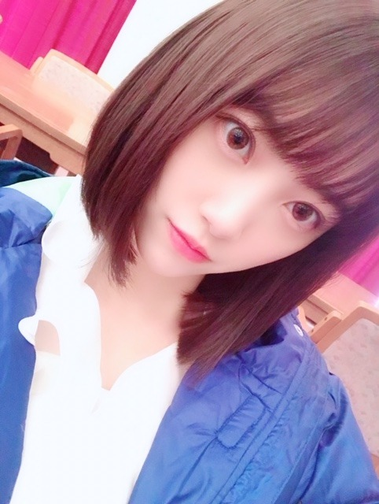

2019/0513Mon愛がなんだってんだよ
愛がなんだ やっと、やっと！観てきました！
令和最初の映画館かも。
俳優陣の皆さんのリアリティかつどこか優しさもあるお芝居にもずっと引き込まれて終始瞬きを忘れていました
目、ひん剥いてたと思う...
あ、でも呼吸は整った状態で観れるんですよ。なんの話だって感じかもしれないですがめちゃくちゃまったりと観れます
あーこういう人いる
これはこうなるよなぁ
みたいな頷きが映画館にあふれてました。笑
だらだらとなんとなく始まるのが20代後半の恋愛...
映画を観ていて、酷いなぁ無いなぁと思っても決して誰かが悪いとか憎いみたいなのがなくて、不思議で、
多分こういう恋愛ばかりなんだろうなぁ あるあるなんだろうなぁ って思いました
深川さんの柔らかい笑顔にも胸がギュンギュンしました...素敵だったなぁ。会いたいなぁ〜
今泉力哉監督は、個人PVを2回撮っていただいたことがあって今泉監督が作り出す空気感が絶妙に居心地の良いものでして、いつかまた、御一緒させていただけるように私も頑張らねばっと思いました
そしてきゅんきゅんが全てじゃない恋愛映画がこれからもっともっと増えていったらいいなぁと思いました
ホットギミック もさまざまな年代の方に観ていただけたら嬉しいです


うふふ
昨日は母の日でしたね☺︎
お母さんに私がメイクをしてあげて、一緒にお出かけをしてささやかなプレゼントを渡しました。
お昼は2人が好きな、天ぷら定食。
食の好みも一緒だし、何より母の嬉しそうな笑顔が1番嬉しいです。
私はまだまだ母みたいな強い女性ではないけど人に優しいところや物事をはっきりと言えて行動できるところ、尊敬しています
一緒に住んでいるのに誰よりもTVや雑誌を見てくれていて、私の活躍を喜んでくれて...
もっと頑張らなきゃって凄く思うんです。お母さんや家族の為にも私は夢を叶え続けていきたいし、諦めたくないなって。
いつかの生放送の歌番組前に、お母さんから今から観るね！頑張ってね！ってメッセージがきてて、
でも本番は1度もカメラに抜かれなくて...
こんなことはよくあるし、普段は気にしないようにしているけど、テレビの前でたのしみに待っててくれたお母さんを想ったら、凄く申し訳ないのと悔しさが溢れてしまい、家に帰ってから大泣きしたことがあって。
もちろんポジションや曲の雰囲気で毎回カメラワークは違うし抜かれたらラッキーなのだから泣くほど...って思うかもしれないけど、私の頑張り不足でポジションが下がって、それで観てくれたお母さんはどう思ったんだろう、とか私も悔しいしお母さんもきっと悔しいのかなと思ったら凄く遣る瀬無い気持ちになって
でもそんなときにお母さんは優しく抱きしめて、頑張ったね^^って言ってくれました
強くて優しくて、いつも救われます
これからもたくさんお母さんの笑顔を見たいし、色んなところに一緒に行きたいなぁ
親孝行は、して凄いことじゃなくて、産んでくれて汗水流して自分の自由を犠牲にしながらここまで育ててくれた親に対しての感謝の気持ちや行動は、普通のことで当たり前だと思います...☺︎
皆さんも、ぜひ母の日に限らず普段から、家族や周りの人に"気持ち"を伝えていってください✨
笑顔や、幸せが広がりますように(^-^)
お母さんいつもありがとう
だいすき！
ブログ見てくれるかな？笑
ではは
2019/05/13 16:24
コメント(463)
未央奈、ブログ更新ありがとう。
読んでてすごくほっこりした気持ちになりました。
未央奈もお母さんのことが大好きで、未央奈のお母さんも未央奈のことが大好きなんだよね。
当たり前のようで、すごく大切なこと。
その気持ち、これからも大事にしていってくださいね。
家族への感謝から周りの方への感謝へと、感謝の輪を広げていきたいですね。
僕も未央奈へ
いつもありがとう。
またの更新、待っています。
読んでてすごくほっこりした気持ちになりました。
未央奈もお母さんのことが大好きで、未央奈のお母さんも未央奈のことが大好きなんだよね。
当たり前のようで、すごく大切なこと。
その気持ち、これからも大事にしていってくださいね。
家族への感謝から周りの方への感謝へと、感謝の輪を広げていきたいですね。
僕も未央奈へ
いつもありがとう。
またの更新、待っています。
かわいい➰
心にしみるブログをありがとう！
わたしも気持ち伝えてみます！
体調には気をつけて
応援してます！❤️
わたしも気持ち伝えてみます！
体調には気をつけて
応援してます！❤️
乃木坂愛に溢れるメンバーみんな好き
未央奈ガンバレ！！
応援してるよ！
応援してるよ！
お母さんとの良い関係性がスゴく伝わってくきました！
ブログ更新いつもお疲れさまです！
母への感謝忘れないことって人として大切ですよね。
体調管理気をつけてねー。
では
母への感謝忘れないことって人として大切ですよね。
体調管理気をつけてねー。
では
未央奈ちゃん
素晴らしい｡ﾟ(ﾟ´ω`ﾟ)ﾟ｡
本当そうだよね、親孝行はして当たり前だよね。
大事なこと改めて気づかせてくれてありがとう！
素晴らしい｡ﾟ(ﾟ´ω`ﾟ)ﾟ｡
本当そうだよね、親孝行はして当たり前だよね。
大事なこと改めて気づかせてくれてありがとう！
応援してる、がんばれ、大好き
身近な人への感謝の気持ちを伝えるのって
照れ臭かったりとか有って中々上手く伝え
られない事があるけどみおなは上手く伝え
られてるみたいやね(^-^)
照れ臭かったりとか有って中々上手く伝え
られない事があるけどみおなは上手く伝え
られてるみたいやね(^-^)
未央奈～☆☆
母の日は、素敵な1日を過ごせてよかったね！
お母さんにメイクをしてあげるなんて凄いね。
メイク好きでお母さんの好みを知っててセンスのある
未央奈のことだから、お母さん、凄く似合ってたんだろうな～
今日のブログを読んで、未央奈が持ってる強さと優しさは、
未央奈のお母さんから受け継いだものなんだなーって思ったよ。
母の日は、素敵な1日を過ごせてよかったね！
お母さんにメイクをしてあげるなんて凄いね。
メイク好きでお母さんの好みを知っててセンスのある
未央奈のことだから、お母さん、凄く似合ってたんだろうな～
今日のブログを読んで、未央奈が持ってる強さと優しさは、
未央奈のお母さんから受け継いだものなんだなーって思ったよ。
突然の感動ブログに泣いた゜゜(´O｀)°゜
未央奈～こんばんは！
ぽてとです！
未央奈の親孝行への考え方、凄く深いし
感動した！(泣)
ぽてとです！
未央奈の親孝行への考え方、凄く深いし
感動した！(泣)
好きやで！
未央奈ちゃん、こんばんは(^o^)/
歌番組で一度もカメラで撮られなくて視てくれてるお母さんに申し訳無くて泣いちゃった未央奈の気持ち、もちろんそんな経験は無いけど、なんとなく判る気がします(・o・)
未央奈のお母さん、娘にメイクして貰うってどんな気持ちなのかな( ＾∀＾)
感謝の気持ちはもちろん大切だけど、お母さんにとっては子供が元気で居てくれるのが一番の親孝行なんだと思います( ＾∀＾)
何歳になっても子供は子供なんだよね( ＾∀＾)
歌番組で一度もカメラで撮られなくて視てくれてるお母さんに申し訳無くて泣いちゃった未央奈の気持ち、もちろんそんな経験は無いけど、なんとなく判る気がします(・o・)
未央奈のお母さん、娘にメイクして貰うってどんな気持ちなのかな( ＾∀＾)
感謝の気持ちはもちろん大切だけど、お母さんにとっては子供が元気で居てくれるのが一番の親孝行なんだと思います( ＾∀＾)
何歳になっても子供は子供なんだよね( ＾∀＾)
『愛がなんだ』
角田光代原作でまいまいや江口さんが出てる…
せつなさが溢れていそう…
岐阜シネックスはこれから封切りなので
是非、観たいです。
バラエティー番組で抜かれなくたって
全然気にすることはありません。
なぜなら、堀ちゃんはそこで勝負してる人じゃないから。
お母さんだって、きっと分かっているから、大丈夫だよ。
今は自分の幅を広げるために
いろんな仕事をすればいいけど
得るものがなくなったら、
そんな番組、真夏さんたちに任せて
堀ちゃんは「ごめんなさい」してよいと思います。
我が子と一緒に、泣いたり、笑ったりできることが
お母さんにとって、最大の親孝行だと思います。
感謝の気持ちを忘れなければ、それでいいんじゃないかな。
角田光代原作でまいまいや江口さんが出てる…
せつなさが溢れていそう…
岐阜シネックスはこれから封切りなので
是非、観たいです。
バラエティー番組で抜かれなくたって
全然気にすることはありません。
なぜなら、堀ちゃんはそこで勝負してる人じゃないから。
お母さんだって、きっと分かっているから、大丈夫だよ。
今は自分の幅を広げるために
いろんな仕事をすればいいけど
得るものがなくなったら、
そんな番組、真夏さんたちに任せて
堀ちゃんは「ごめんなさい」してよいと思います。
我が子と一緒に、泣いたり、笑ったりできることが
お母さんにとって、最大の親孝行だと思います。
感謝の気持ちを忘れなければ、それでいいんじゃないかな。
僕も母への感謝の気持ちを忘れずに、生きていきたいと思います
こんばんは
東京に、明後日て来るよ
頑張ってね‼️
東京に、明後日て来るよ
頑張ってね‼️
こんばんは堀ちゃん
堀ちゃんはほんとブログ更新頻度が高いよね、夜勤明けで確認したら更新されてました、ありがとう。
堀ちゃんのファンを思う気持ちと母親を思う気持ちは心に染みるし、ほんと忘れてはいけないよね。
いつもとは少し違った感じのブログで感動しました。堀ちゃんをさらに応援したいという気持ちが強くなったよ。
次のブログも楽しみにしてます。
バーイ
堀ちゃんはほんとブログ更新頻度が高いよね、夜勤明けで確認したら更新されてました、ありがとう。
堀ちゃんのファンを思う気持ちと母親を思う気持ちは心に染みるし、ほんと忘れてはいけないよね。
いつもとは少し違った感じのブログで感動しました。堀ちゃんをさらに応援したいという気持ちが強くなったよ。
次のブログも楽しみにしてます。
バーイ
またギュンギュンしてるよ‥なんの音なんだよ‥(･･;)
そんな風に思ってくれる娘がいてお母さんも幸せだろうね(^^)
そんな風に思ってくれる娘がいてお母さんも幸せだろうね(^^)
堀さん、こんばんは。
「愛がなんだ」見れて良かったですね。僕は一回見たんですけど、まだ感想が固まらないままです。
目ひん剥くなんて言ったらまるでサスペンスみたいですけど、マモちゃんとの対決編でテルコが言った”手が綺麗”は、”あなたの手は汚させない”だった気がして狂気と恐怖を感じました。
原作ではテルコの仕事はアンケートの集計だったようで、”あるある”にもそれぞれ事情があるってことだったのかなって思います。あと幸せには一人のと二人のと家族のと世間から見たのと段階が有るってことなのかなとも思いました。僕には難しかったのでもう一回くらい見てみようかと思います。
とても良い母の日だったみたいですね。
お母さんや家族の為にも夢を叶え続けていきたいし諦めたくないということは、家族の存在のおかげで堀さんも強くなれてるんですよね。だったら、堀さんのお母さんが強くて優しいのも、母親になったからなのかもしれないですね。そりゃあ堀さんが娘だったら、可愛いし大事だし支えなきゃって思うに決まってます。堀さんがお母さんに守ってもらえるならとても安心です。
ブログ更新してくれて嬉しいです。
いつも幸せと笑顔をありがとうございます。
「愛がなんだ」見れて良かったですね。僕は一回見たんですけど、まだ感想が固まらないままです。
目ひん剥くなんて言ったらまるでサスペンスみたいですけど、マモちゃんとの対決編でテルコが言った”手が綺麗”は、”あなたの手は汚させない”だった気がして狂気と恐怖を感じました。
原作ではテルコの仕事はアンケートの集計だったようで、”あるある”にもそれぞれ事情があるってことだったのかなって思います。あと幸せには一人のと二人のと家族のと世間から見たのと段階が有るってことなのかなとも思いました。僕には難しかったのでもう一回くらい見てみようかと思います。
とても良い母の日だったみたいですね。
お母さんや家族の為にも夢を叶え続けていきたいし諦めたくないということは、家族の存在のおかげで堀さんも強くなれてるんですよね。だったら、堀さんのお母さんが強くて優しいのも、母親になったからなのかもしれないですね。そりゃあ堀さんが娘だったら、可愛いし大事だし支えなきゃって思うに決まってます。堀さんがお母さんに守ってもらえるならとても安心です。
ブログ更新してくれて嬉しいです。
いつも幸せと笑顔をありがとうございます。
愛がなんだってんだよを
目ぇひん剥いて観てたんだ？
アイドルがなんだってんだよ
って感じかな？

目ぇひん剥いて観てたんだ？
アイドルがなんだってんだよ
って感じかな？
ではは。
堀ちゃん、大好きだよー
こういうことを言えるからこそ2期生の最先端、乃木坂を引っ張っていけるのだと思う
応援してくるよ！素敵な言葉をありがとう！
応援してくるよ！素敵な言葉をありがとう！
未央奈ちゃん
お母さん喜んでると思います
とても優しくて素直で
人に対して思いやりがあって
月並みな言葉ですけど
頑張って下さい
応援してます。
お母さん喜んでると思います
とても優しくて素直で
人に対して思いやりがあって
月並みな言葉ですけど
頑張って下さい
応援してます。
カメラは仕方ないよ。
ポジションもあるけど、選抜じゃないメンバーもいるんだからさ。
一生懸命やっているのはみんなわかっているから。
お母さんといつまでも仲良くね。
ポジションもあるけど、選抜じゃないメンバーもいるんだからさ。
一生懸命やっているのはみんなわかっているから。
お母さんといつまでも仲良くね。
みおにゃ‼️
お母さん思いだね！優しい〜❤️
今回はこれで終わりです
これからも頑張ってください‼️
大好き〜
お母さん思いだね！優しい〜❤️
今回はこれで終わりです
これからも頑張ってください‼️
大好き〜
未央奈ちゃん、おはようございます。
未央奈ちゃんのお母さんへの思い、心にしみました。素敵です、益々応援したくなりました。
最近は未央奈ちゃんが表紙の雑誌が多いから、とっても嬉しいし、雑誌のプレゼント企画に応募しています。何か当たりたいです。
気温の変化が大きいけど、良い体調で過ごしてくださいね。
乃木坂46と頑張ってるcuteでsmartな未央奈ちゃんを応援しています。
未央奈ちゃんのお母さんへの思い、心にしみました。素敵です、益々応援したくなりました。
最近は未央奈ちゃんが表紙の雑誌が多いから、とっても嬉しいし、雑誌のプレゼント企画に応募しています。何か当たりたいです。
気温の変化が大きいけど、良い体調で過ごしてくださいね。
乃木坂46と頑張ってるcuteでsmartな未央奈ちゃんを応援しています。
みおなの頑張りを思ったら思わず泣いてしまった
ずっとずっとだいすきだし応援してる( ´•̥ ̫ •̥` )！！！
いつまでも推しはみおなだけ ♡みおなのペースで輝き続けてください( i꒳i )
ずっとずっとだいすきだし応援してる( ´•̥ ̫ •̥` )！！！
いつまでも推しはみおなだけ ♡みおなのペースで輝き続けてください( i꒳i )
未央奈ちゃん更新ありがとー！
令和になって初の映画かー。いいなー！
自分はまだ行けてないから時間作って行こうかな(^o^)
自分も母の日にサプライズをしました！
母親の喜んでる姿をみるとめっちゃ嬉しくなるよね！
親孝行ってやっぱ大事だよね！
未央奈ちゃんの喜ぶ姿ももっと見たいから
応援も頑張らなくちゃ！
令和になって初の映画かー。いいなー！
自分はまだ行けてないから時間作って行こうかな(^o^)
自分も母の日にサプライズをしました！
母親の喜んでる姿をみるとめっちゃ嬉しくなるよね！
親孝行ってやっぱ大事だよね！
未央奈ちゃんの喜ぶ姿ももっと見たいから
応援も頑張らなくちゃ！
今日ZIP!でまいまいの事やってたね！
みおなちゃん、大好きだよー！
みおなちゃん、大好きだよー！
ブログありがとうー！
singoutのライブ当たったんです！！
初めて未央奈に会いに行けるよ …
私も母の日でお母さんにご飯を作ってあげたんです！
未央奈だいすき！
singoutのライブ当たったんです！！
初めて未央奈に会いに行けるよ …
私も母の日でお母さんにご飯を作ってあげたんです！
未央奈だいすき！
みおな頑張れ！
母の日の話素敵
これからもほっこりさせてね
おすそ分けありがとう
これからもほっこりさせてね
おすそ分けありがとう
未央奈さんおはようございます。ブログ更新ありがとうございます。未央奈さんの頑張っている姿を見てお母さん喜んでいると思いますよ。これからも体に気をつけてお仕事頑張って下さい！未央奈さんの姿を見て自分が元気をもらっています。追伸、ホットギミックのムビチケ買いました。今から公開楽しみにしています。
おつかれさま
凄くいいお母さんだね！
そして母親思いのみおなにも感激してる(T^T)
素敵な関係だね
学校終わったらホットギミックみるよー
凄くいいお母さんだね！
そして母親思いのみおなにも感激してる(T^T)
素敵な関係だね
学校終わったらホットギミックみるよー
カツカレーです⊂(ο･㉨･ο）⊃”くまﾃﾞｽ…
BOMB6月号購入しました。サボテンさん×ワンピース堀殿きゃわわうれぴーぽーo(￣◎￣)o ﾊﾞﾌﾞｩ♡ポスターもけんぴゅーﾜﾝ (･x･U)≡≡≡３
ほんじつも小松菜丼パワー100万馬力でばいころまる( ;-(ｴ)-)ゞｸﾏｯﾀﾅｧ…
BOMB6月号購入しました。サボテンさん×ワンピース堀殿きゃわわうれぴーぽーo(￣◎￣)o ﾊﾞﾌﾞｩ♡ポスターもけんぴゅーﾜﾝ (･x･U)≡≡≡３
ほんじつも小松菜丼パワー100万馬力でばいころまる( ;-(ｴ)-)ゞｸﾏｯﾀﾅｧ…
好きやで！
おはようございます‼︎
ブログ更新、ありがとうございます♪
お母さんへの愛、素晴らしいですね‼︎
心で思っていても、なかなか口にしたり、どこかで表現するのは難しいもの。
恥ずかしさを乗り越えて、きちんと想いを伝えているのが、本当に立派だと思います♪
自分も母の日にはプレゼントを贈っているし、もちろん感謝の気持ちもあるんだけど、言葉にしているかと言われれば、なかなか…
自分でも、いい歳してなんだよって思うんだけど、まだまだ恥ずかしさの方が勝ってしまって、言葉にするのは躊躇してしまうんですよね(苦笑)。
反省しきりです…
自分の周りにも親になる人が増えてきて、その大変さ、無償の愛の価値は、以前よりもリアルな感覚として伝わってきます。
自分も未央奈を見習って、きちんと言葉にすべきですね…‼︎
言葉は時に唇を動かすだけで軽々しく発することができるけど、時に何よりも重たく、喉を通過してくれない。
時に簡単に聞き流されてしまうけど、時に何よりも人の心を震わせることができて、感動させたり、傷つけたりする。
言葉って、簡単なようで難しい。
不思議ですよね♪
まあ、言い訳はともかくとして。
自分は性懲りも無く、未だに素晴らしい大人になることを諦めていないので(笑)、未央奈に負けないよう、追いつけ追い越せで頑張りますよ‼︎
ではでは、また。
今日も未央奈にとっていい1日になりますように♪
ブログ更新、ありがとうございます♪
お母さんへの愛、素晴らしいですね‼︎
心で思っていても、なかなか口にしたり、どこかで表現するのは難しいもの。
恥ずかしさを乗り越えて、きちんと想いを伝えているのが、本当に立派だと思います♪
自分も母の日にはプレゼントを贈っているし、もちろん感謝の気持ちもあるんだけど、言葉にしているかと言われれば、なかなか…
自分でも、いい歳してなんだよって思うんだけど、まだまだ恥ずかしさの方が勝ってしまって、言葉にするのは躊躇してしまうんですよね(苦笑)。
反省しきりです…
自分の周りにも親になる人が増えてきて、その大変さ、無償の愛の価値は、以前よりもリアルな感覚として伝わってきます。
自分も未央奈を見習って、きちんと言葉にすべきですね…‼︎
言葉は時に唇を動かすだけで軽々しく発することができるけど、時に何よりも重たく、喉を通過してくれない。
時に簡単に聞き流されてしまうけど、時に何よりも人の心を震わせることができて、感動させたり、傷つけたりする。
言葉って、簡単なようで難しい。
不思議ですよね♪
まあ、言い訳はともかくとして。
自分は性懲りも無く、未だに素晴らしい大人になることを諦めていないので(笑)、未央奈に負けないよう、追いつけ追い越せで頑張りますよ‼︎
ではでは、また。
今日も未央奈にとっていい1日になりますように♪
成功する人は、みんな親孝行なんですよね。
父の日も忘れずにね！
父の日も忘れずにね！
やっぱり未央奈が一番！！
未央奈ちゃんありがとうございます‼楽しみにしてます！ありがとうございます！頑張ります‼頑張って下さい！ありがとうございます！楽しみにしてます
未央奈、今日も一日お疲れさまでした。
「愛がなんだ」ようやく観ることができたんですね。良かったです。僕もやっと感想を伝えられます…笑
僕は仲原の恋愛観や人間そのものを投影してしまって、共感して、号泣して。。。
「自分は好きな人の一番じゃなくていい。いろいろ頼れる人がいるけど、考え抜いてようやく自分が浮かび上がってくればそれでいいんです」っていう100歩も200歩も下がった遠慮がちな姿勢が、自分を見ているようで。。
1回目、テル子と鍋を食べている時に言った「幸せになりたいっすね」と2回目、コンビニの駐車場で言った「幸せになりたいっすね」の言葉。2回目でまた号泣して…。誰かを好きになることに、もはや自分を犠牲にしてまで葉子と接してきた仲原の報われない感じとか、そんな自分への不甲斐なさを告白するかのような悲しさが溢れていて。
演技なんだけど演技には見えないのも凄いなと思いました。途中から「演技？それとも素なの？」とわからなくなるくらいでした。
未央奈は「愛がなんだ」で描かれた恋愛観に共感するところはありましたか？またどこかでお話しできたらいいなぁ…。
5/12は母の日でしたね。
未央奈は本当にお母さんのことが大好きですよね。
いつも支えてくれる人への感謝を忘れずに過ごしているんだろうなっていうのが伝わったくる文章でした。
それは未央奈が素直で、嘘偽りのない文だからこそ、読んでる方も心が温かくなるような気持ちになって。未央奈は優しい人ですね。これもひとえにお母さん譲りなのかな。素敵だと思います。
これからも仲良く、楽しく過ごしていけたらいいね。
じゃあ、最後に。
体調管理には気をつけて。
忙しい日々で睡眠とかちゃんと取れないかもだけど、無理せず、休む時間はしっかりとってね。自分のことも大切にしてくださいね。。
ではでは、ねこでした。
私も未央奈ちゃんにメイクしてもらいたい
未央奈、ブログ感動したよ!
堀ちゃん おはよー。
ブログ見たよ、堀ちゃんはほんと映画勉強してるね、ホットギミック楽しみです。
母の日エピソード感動です。優しいね、心に刺さりました。
今週もがんばれ 未央奈!
じゃあね。
ブログ見たよ、堀ちゃんはほんと映画勉強してるね、ホットギミック楽しみです。
母の日エピソード感動です。優しいね、心に刺さりました。
今週もがんばれ 未央奈!
じゃあね。
高校生 親孝行せい！なんてネ。
レコメンとかでつかって貰っていいですよ。堀ちゃんなら。
レコメンとかでつかって貰っていいですよ。堀ちゃんなら。
日々努力！


令和最初の映画館！こっちはアベンジャーズエンドゲームかな。
ちょちょ、目大丈夫？笑
目、ひん剥いてたって、やば 笑
よかったぁ。呼吸大事！
そんなにまったり観れるんだね！☺︎
20代後半の恋愛、、
24歳だからまだギリギリわからないかな。笑
深川さん出てるのかー！
でた！ギュンギュン。笑う
おぉー、今泉力哉監督。
きゅんきゅんが全てじゃない恋愛映画かぁ。
愛がなんだ 観に行こうと思ったら上映期間木曜までだった。。観に行くか迷い中〜
さりげなく番宣！さすがっす！
ホットギミック観るー！✨
花柄の衣装かわいー！！！
かわいいのぅ。。
うふふ。
(急なうふふ。
そうだね。昨日は母の日！(^-^)
お母さんにメイクをしてあげるって娘ならではだね！！
あったかい文章。。なんだかほっとする。
お母さんや家族の為にも夢を叶え続けていきたい、諦めたくない。ちゃんと伝わった！
みおちゃん。。
感動したよ。。
ほんと強くて優しいお母さんだね♪
ぜひ、お母さんと一緒にお出かけしてください！
親に対しての感謝の気持ちや行動は普通のことで当たり前のこと。
すごい深い言葉をさらっと言うあたり、さすがだね！その考え方好きです。
わかった。家族や周りの人に気持ちを伝えていくね♪
笑顔や、幸せが広がりますように(^-^)
だいすき！
見てるよ、きっと。
ではではは✌️